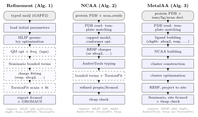

ParmFit
Overview
ParmFit is the MAPLE force-field parameterization task. It turns MAPLE calculator results, existing topology files, and optional external QM references into Amber-style parameters for ligand/cofactor correction, noncanonical amino-acid templates, and metal-site parameterization.
ParmFit has three public method keywords. method=refinement refines parameters for an existing mol2 topology. method=ncaa parameterizes noncanonical amino-acid residues and method=metalaa parameterizes a metal site; both read a hydrogenated PDB block.
ParmFit calls AmberTools utilities to handle parameter assignment and template generation; the required tools are listed under Requirements. Before running MD with a ParmFit topology, follow each route’s deployment checks — the tleap validation must report Errors: 0, the fitted charges must match their targets, and MAPLE-typed topologies go through a ParmEd pass before SHAKE.

Routes
| Route | Keyword | Target | Main Products |
|---|---|---|---|
| Refinement | refinement |
Ligand, cofactor, or small molecule with existing mol2 topology | Refined Amber mol2/frcmod and GROMACS top/gro |
| NCAA | ncaa |
Protein residue in a PDB file | Residue prepin/frcmod, processed PDB, tleap validation files |
| MetalAA | metalaa |
Ion in a PDB metal site | Metal-site mol2, metal frcmod, tleap deployment files |
The method keyword selects the route; without an explicit method (and without input=), ParmFit defaults to refinement. The input for each route — its header keys and the required structure block (a coordinate block for Refinement, a PDB block for NCAA and MetalAA) — is specified in that route’s manual. The ParmFit Tutorials work through each route on a real system.
Requirements
All routes need a working MAPLE installation and AmberTools on PATH — a run invokes whichever utilities it needs: parmchk2, antechamber, prepgen, espgen, resp, and tleap. Refinement relies on GAFF2 atom typing: supply a pre-generated mol2 (antechamber -at gaff2 ...), or omit mol2= and ParmFit does the typing itself at runtime, building the mol2 from the molecule recorded in the input file. That generated mol2 exists only to carry the GAFF2 types — its charge column holds zero placeholders, and chg_fit therefore defaults to abcg2 (see the Refinement page). In both cases the mol2 atoms must appear in the same order as the coordinate block, hydrogens included — the auto-generated mol2 satisfies this by construction; MAPLE checks only that the atom counts match and then pairs atoms by position. NCAA and MetalAA read exactly one PDB block and need no separate atomic-charge input. Refinement may preserve the charges already stored in the input mol2 when chg_fit=none; the other charge routes derive charges at runtime (see ChargeFit below).
When RESP charges are needed. They always take their ESP from Gaussian: g16 or g09 must be on PATH for Refinement and NCAA runs with chg_fit=resp (the NCAA default) and for every MetalAA run. QM reference jobs (iqm=true) use qm_engine, which defaults to g16; set qm_engine=orca to run them with ORCA instead. A Refinement or NCAA run therefore needs no Gaussian when chg_fit is not resp and the run keeps iqm=false or sets qm_engine=orca; MetalAA always needs Gaussian.
How MAPLE reads PDB structures. The PDB must be explicitly hydrogenated; MAPLE neither adds nor removes hydrogens. While reading the PDB, MAPLE builds a connectivity graph and matches standard protein residues against the active pro_ff Amber templates using element composition, topology, explicit hydrogens, and chirality. Matched residues receive canonical atom names, atom types, partial charges, residue net charges, and Amber connectivity — the atom names are rewritten to the canonical template names before tleap export — so standard input atom names are not required. Cysteine states are resolved in two steps: explicit SG–H connectivity distinguishes protonated CYS from the deprotonated CYM/CYX candidates, and the graph-equivalent CYM/CYX pair is decided by disulfide-bond detection — a cysteine participating in an S–S bond is assigned CYX (net charge 0), otherwise CYM (net charge −1). Alternate conformations resolve by default to the altloc A set, or to the highest-occupancy set when A is absent; keep chooses among them when a listed residue carries several alternate conformations — append the altloc letter (A181B) to build that residue from its altloc-B atoms, while a letterless entry (A181) keeps the default choice. Residues without a complete standard template are reported, not guessed: backbone-only matches (NCAA candidates) and unmatched nonprotein residues, which should be declared via lig_resids/ncaa_resids in MetalAA or parameterized in separate NCAA runs.
Read the tleap validation warnings. Errors: 0 is the gate; the warnings decide whether the topology is safe to use. Most are routine — terminal-name conversions (NTHR -> THR) and an addIons request after neutralization. The tutorials list and explain the warnings of their verified runs.
General Settings
These parameters apply across all ParmFit routes. For iqm behavior, qm_mode, and levels of theory (opt_level / sp_level / chg_level), see the QM Reference section below.
| Parameter | Default | Description |
|---|---|---|
qm_engine | g16 | External QM engine: g16, g09, gaussian, or orca |
qm_nproc | 8 | Number of processors for QM jobs |
qm_mem | 24 | Memory in GB for QM jobs; adjust this according to the available memory and the size of the selected QM reference model. |
opt_max_iter | 256 | Maximum LBFGS iterations for MLIP geometry optimization. In Refinement, use max_iter instead. |
opt_max_step | 0.2 | Maximum LBFGS step size in Å for MLIP geometry optimization. In Refinement, use max_step instead. |
ChargeFit
chg_fit selects the atomic-charge source independently of iqm and qm_compare. Refinement defaults to none; the input mol2 charges are kept as they are. NCAA defaults to resp; none is invalid because the PDB route has no reusable input charges. MetalAA derives site charges through a fixed RESP-only workflow and does not expose chg_fit.
chg_fit | Behavior |
|---|---|
none | Refinement only. Preserve the input mol2 charges without creating a charge-fitting work directory. |
resp | Derive charges at runtime: Gaussian evaluates the ESP, AmberTools (espgen + resp) performs the two-stage RESP fitting. chg_level defaults to HF/6-31G(d) for Refinement and NCAA, and the resp_backend key accepts only its default, gaussian. |
| Charge-capable MLIP | Use AIMNet2 (aimnet2), AIMNet2-NSE (aimnet2nse), or MACE-POLAR (macepols, macepolm, or macepoll). A recognized MLIP must provide atomic charges; otherwise ParmFit reports a capability error. |
| Unrecognized value | Pass the value verbatim to antechamber -c, for example abcg2, bcc, or gas. ParmFit does not maintain an Antechamber charge-method whitelist. |
RESP derivation always runs the same two-tool pipeline — Gaussian for the ESP, AmberTools for the RESP stages — whether iqm is enabled or disabled; its Gaussian jobs reuse the configured qm_nproc and qm_mem. The charge-capable MLIP may differ from the main #model. If it matches the main model, ParmFit reuses the active calculator and its configured options. A different charge-capable MLIP is initialized once on the active device with its default options.
TorsionFit
TorsionFit refines proper torsion parameters in two stages. Stage 1 uses a spectral shared-group restrained linear least-squares solver: torsion instances that share the same chemical environment (atom types plus one-hop neighbors) are grouped and fitted together, with a spectral helper providing phase seeds. Stage 2 takes the Stage 1 parameters and performs direct global kPhi/phase optimization against the scan reference profile.
torsion_refine_rounds controls how many Stage 1→Stage 2 fast-MM cycles are attempted. Each cycle refreshes the MM reference profiles — the first from the Stage 0 parameters (the mSeminario-refined starting point), later ones from the previous round’s accepted parameters — and re-runs Stage 1 and Stage 2. A cycle is accepted only if total loss improves; otherwise the workflow rolls back and stops. With torsion_refine_rounds=0, only Stage 1 runs.
TorsionFit applies to Refinement and NCAA routes. The fitted dihedrals differ by route: Refinement auto-selects rotatable single bonds from the mol2 topology; NCAA restricts fitting to sidechain dihedrals and disables torsion ensemble terms internally.
| Parameter | Default | Description |
|---|---|---|
torsionfit | true | Enable proper torsion fitting after the bond/angle stage |
torsion_bonds | Auto | Explicit rotatable bonds as atom pairs, order-insensitive (6-10 = 10-6; e.g. 6-8,12-14); otherwise auto-selected from mol2 topology. In NCAA, entries are residue-local 1-based atom indices within the target residue (ACE/NME caps not counted) and per-residue groups are separated with ; |
torsion_steps | 36 | Scan steps for a full 360° rotation of a torsion; the step size is 360° divided by this value |
stage1_weights | true | Weight scan frames by reference energy in the Stage 1 least-squares fit; false gives all frames equal weight |
torsion_refine_rounds | 3 | Maximum Stage 1→Stage 2 fast-MM cycles |
torsion_refine_max_iter | 256 | Maximum iterations for the Stage 2 global optimizer |
torsion_refine_tol | 1.0e-6 | Convergence tolerance for Stage 2 |
torsion_ensemble | false | Add rigid rotor ensemble frames as extra Stage 2 constraints in Refinement; NCAA disables this internally |
torsion_ensemble_ratio | 0.3 | Target ensemble frame ratio relative to rotatable bonds × steps in Refinement |
torsion_ensemble_weight | 0.5 | Weight of ensemble loss relative to scan loss in Refinement Stage 2 |
backend | cgbs | TorsionFit scan optimizer backend: cgbs, cgws, or lbfgs |
constraint_mode | projected | Scan constraint mode: projected or fixinternals (not recommended to change) |
Scan Reuse
Before each scan, TorsionFit looks under <base>_work/torsionfit/ for the scan file that an earlier run wrote for the same target. If that file has the expected number of frames and the same elements, and its scan angles match those of the current starting geometry, TorsionFit reads and reuses it, and the log does not report the reuse. The check ignores the model and the QM level of theory, so delete <base>_work/torsionfit/ before you rerun with either of them changed.
QM Reference (iqm)
iqm controls whether external QM jobs provide reference-quality geometry, Hessian, and torsion data. When iqm=false, all optimization, Hessian evaluation, and torsion reference work use the MAPLE MLIP calculator exclusively. When iqm=true, MAPLE runs QM reference jobs whose scope depends on the route.
QM RESP does not require iqm
Setting iqm=false does not disable QM charge derivation. Refinement and NCAA still derive charges through Gaussian ESP and AmberTools RESP when chg_fit=resp, and MetalAA always runs its fixed RESP workflow. iqm controls only whether external QM supplies reference geometry, Hessian, and torsion data.
| Route | iqm=false | iqm=true |
|---|---|---|
| Refinement | MLIP opt + MLIP Hessian (+ MLIP TorsionFit if enabled) | QM opt_frequency → QM geometry + QM Hessian (+ QM-referenced TorsionFit via qm_mode). If bonded=none but torsionfit=true, only a QM geometry optimization is run—no Hessian is computed. |
| NCAA | MLIP capped-model opt + MLIP Hessian | QM reference job on the capped model, but only when bonded≠none or torsionfit=true: bonded≠none runs QM opt_frequency (geometry + Hessian); bonded=none with torsionfit=true runs only a QM geometry optimization. |
| MetalAA | MLIP large-model opt + MLIP Hessian | QM opt_frequency after MLIP opt → QM geometry + QM Hessian for bonded fitting. No TorsionFit, no qm_mode. |
Levels of Theory
| Parameter | Refinement | NCAA | MetalAA |
|---|---|---|---|
chg_level | HF/6-31G(d); RESP ESP when chg_fit=resp | HF/6-31G(d); RESP ESP when chg_fit=resp | PBE1PBE/def2SVP; RESP ESP in the fixed workflow |
opt_level | QM opt/opt_freq/constrained_opt when iqm=true | QM opt/opt_freq when iqm=true | QM opt_freq when iqm=true |
sp_level | QM single-point via qm_mode when iqm=true; defaults to opt_level | QM single-point via qm_mode when iqm=true; defaults to opt_level | Unused (no TorsionFit) |
Level strings are passed to the QM engine verbatim, so write them the way the selected engine expects: B3LYP/def2SVP for Gaussian, B3LYP/def2-SVP for ORCA. A mismatched spelling — for example the hyphenated form with qm_engine=g16 — fails at the first QM job with a route syntax error. RESP chg_level values always follow Gaussian syntax. The built-in defaults of opt_level and sp_level are written B3LYP/def2-SVP, the ORCA spelling, while the default engine is g16. Set opt_level explicitly (for example B3LYP/def2SVP) before enabling iqm with Gaussian.
TorsionFit qm_mode
qm_mode controls how QM reference data is used inside TorsionFit (Refinement and NCAA; mode 1 is the default). It has no effect on MetalAA.
| Mode | Description |
|---|---|
| 1 | MLIP drives the torsion scan, then QM single-point energies are calculated at each frame |
| 2 | MLIP pre-optimization, then QM constrained torsion optimization at each frame |
| 3 | QM engine evaluates energy and forces at each scan step; the built-in optimizer of MAPLE drives the scan |
qm_compare (Refinement only)
When iqm=true, qm_compare=true, and refinement is enabled, Refinement runs an additional MLIP-only comparison branch alongside the QM path. The MLIP branch produces _mlip-suffixed output files, so its parameters can be compared against the QM-referenced ones without re-running the workflow. Charge fitting uses the same configured chg_fit method independently on the QM and MLIP branch geometries, so each branch reports its own charged work mol2.
External ParmFit Config
For more complex jobs, use a separate key-value text file and reference it from the input header. Any plain text file with key=value lines and optional # comments is accepted. The config file accepts parmfit parameters only; do not place global MAPLE keys in it. Declare the method inline together with the input= reference, for example #parmfit(method=ncaa,input=...).
#model=uma(size=uma-s-1p1)
#parmfit(method=ncaa,input=NCAA.parmfit)
PDB MaDA.pdbAn external config must not set method=, pdb=, input=, or frcmod=; declare method in the inline #parmfit(...) header and provide PDB structures through the PDB <path> block of the input file. Refinement frcmod files are generated automatically.
Output Layout
ParmFit writes a main .out file and a <base>_work/ directory. Next to the .out file, every route also writes a <base>.parmfitrun.in snapshot of the resolved configuration (user entries with defaults filled in); unrecognized keys are reported as warnings in the log. The excerpts below illustrate key sections of the .out file for each route.
Refinement
The setup header echoes the input mol2, bonded refinement method, QM reference state, and TorsionFit configuration:
======================================================================
Parmfit Refinement Setup
======================================================================
Input mol2: toluene_ff.mol2
Initial frcmod: Toluene_work/Toluene_original.frcmod
Topology atoms: ...
Topology bonds: ...
Bonded refinement: mSeminario
QM reference: disabled
TorsionFit: enabled
Torsion backend: cgbs
Torsion bonds: auto-select non-ring torsion bonds with proper torsionsThe mSeminario bond/angle changes table lists each modified BOND and ANGLE term with its type code (atom pairs for BOND, atom triples for ANGLE) and old → new values:
------------------------------------------------------------------------------------------------------------
BONDS
------------------------------------------------------------------------------------------------------------
(1,2) c3-ca k=... r=... | k=... r=...
...
------------------------------------------------------------------------------------------------------------
ANGLES
------------------------------------------------------------------------------------------------------------
(2,1,8) ca-c3-hc k=... theta=... | k=... theta=...
...The TorsionFit dihedral changes table shows per-torsion kPhi/n/phase changes across multiple term slots; NA entries indicate newly added terms:
------------------------------------------------------------------------------------------------------------
DIHEDRALS
------------------------------------------------------------------------------------------------------------
(3,2,1,8) ca-ca-c3-hc term=1 k=... n=1 phase=... | k=... n=1 phase=...
(3,2,1,8) ca-ca-c3-hc term=2 k=NA n=NA phase=NA | k=... n=2 phase=...
...The torsion energy trace gives per-dihedral angle-versus-energy profiles and ends with MAE/RMSE. Its columns are the scan reference (MLIP or QM), the original GAFF2 profile (orig), the mSeminario-refined starting point (stage0), and the refitted profiles after each TorsionFit stage (stage1, stage2). A rejected Stage 2 remains visible as an NA column; the final comparison is labelled stage2_final when Stage 2 is accepted and stage1_final when it is rejected:
torsion bond (1, 2):
angle_deg MLIP_ref orig_ref stage0_ref stage1_ref stage2_ref
... ... ... ... ... NA
...
MLIP_ref vs stage1_final: MAE = ... kcal/mol, RMSE = ... kcal/molThe final PARMFIT REFINEMENT RESULT block lists the products, charge provenance, stage timing, and parameter-change counts:
Main products:
Amber mol2: Toluene_work/Toluene_maple.mol2
Amber frcmod: Toluene_work/Toluene_maple.frcmod
...
Charge fitting:
method: resp
RESP level: HF/6-31G(d)
target charge: ...
actual charge: ...
work MOL2: Toluene_work/chargefit/mlip_route_charged.mol2
final MOL2: Toluene_work/Toluene_maple.mol2NCAA
The job header identifies the target residue, chirality, charge method, and progress through each stage:
Target: _89:HIF (protein)
PDB residue templates: matched=516, backbone_only=1, unmatched=0
non-standard (matched backbone only): _89:HIF (target)
PDB target charge: _89:HIF = 0 (from your input)
[NCAA] MLIP model preparation + reference optimization ...
NCAA target selector: HIF89
residue name: HF1
chirality: L
net charge / spin multiplicity: 0 1
protein ff: ff14SB
bonded refinement: mseminario
charge fitting: resp
charge level: HF/6-31G(d)
[NCAA] atomic charge fitting (resp) ...
[NCAA] AmberTools template build ...
[NCAA] MLIP Hessian + mSeminario ...
[NCAA] TorsionFit skipped ...
[NCAA] writing refined templates + tleap input ...
[NCAA] tleap validation ...The PARMFIT NCAA RESULT block confirms the charge result and lists the output files, tleap status, and the exact tleap command to run:
Status: completed
Route: NCAA
Target: _89:HIF
Residue name: HF1
Chirality: L
Protein ff: ff14SB
Res charge/spin-multi: 0 1
Charge fitting: resp
Charge level: HF/6-31G(d)
Target charge: 0
Actual charge: ...
Charge MOL2: MaDA_work/ncaa/HIF89/MaDA_capped.mol2
Main products:
refined prepin: MaDA_work/HF1_maple.prepin
refined frcmod: MaDA_work/HF1_maple.frcmod
tleap PDB: MaDA_work/MaDA_ncaa_tleap.pdb
tleap input: MaDA_work/MaDA_ncaa_tleap.in
Next step:
cd MaDA_work
tleap -s -f MaDA_ncaa_tleap.in |tee MaDA_ncaa_tleap.out
Tleap status:
Errors: 0
Warnings: 4
Notes: 0MetalAA
The job header prints the metal target, site parameters, ion charge and multiplicity, and per-stage logs:
Target: A462:FE (ion)
ion_resids: A462
add_resid: []
cluster_cutoff: 3.00 A
donor_cutoff: 2.70 A
water ff: tip3p
protein ff: ff14SB
ion ff: 12_6
ion_charges: 3
ion_mults: 6
ncaa_resids: []
large model charge/mult: -2 6
chgmod: 1
fixchg_resids: []
QM method: PBE1PBE/def2SV
[MetalAA] large-model input written.
[MetalAA] MLIP large-model optimization ...
[MetalAA] large-model RESP ...
[MetalAA] site files written.
[MetalAA] MLIP Hessian + Seminario + final frcmod ...
[MetalAA] final parameter files written.
[MetalAA] running tleap validation ...The renamed atom types table shows how MAPLE reassigns types locally: the metal receives M1, direct donors receive Z1/Z2/..., and other atoms keep their original Amber/GAFF types. Verify that the donor list matches the intended coordination environment:
Renamed atom types:
residue atom old new charge
_400:CYM SG SH Z1 -0.329172
A461:HEM NA nc Z2 -0.129187
...
A462:FE FE FE M1 0.439642The PARMFIT METALAA RESULT block lists core residues, output files, tleap status, any environment warnings, and the tleap command:
Status: completed
Route: MetalAA
Target: A462:FE
Protein ff: ff14SB
Ions charge: 3
Large model charge/mult: -2 6
Core residues: _400:CYM, A461:HEM, A462:FE
Main products:
final frcmod: P450_work/P450_metal.frcmod
tleap input: P450_work/P450_metal_tleap.in
tleap PDB: P450_work/P450_metal_tleap.pdb
mol2 files: P450_work/CM1.mol2, P450_work/HM1.mol2, P450_work/FE1.mol2
Next step:
cd P450_work
tleap -s -f P450_metal_tleap.in |tee P450_metal_tleap.out
Tleap status:
Errors: 0
Warnings: 8
Notes: 1
Warnings:
Potentially charged standard residues within 8 Å of the metal but outside the large model: _398:ARGTroubleshooting
| Symptom | Cause | Fix |
|---|---|---|
Gaussian executable … was not found | The run derives RESP charges or runs a QM reference job, and MAPLE cannot find the Gaussian executable (g16 or g09) on PATH. | Put Gaussian on PATH, or run without it as described in Requirements. |
| The first Gaussian job stops with a route syntax error. | A hyphenated level such as B3LYP/def2-SVP reached Gaussian; the built-in opt_level default is written this way. | Write B3LYP/def2SVP for Gaussian; see Levels of Theory. |
Duplicate parmfit config key '<key>' at <file>:<line>. | The sidecar config sets one key twice, for example after lines were appended to a copied config. | Keep one line per key: edit the existing line instead of adding another. |
Unknown left-hand '<key>' in parmfit config (warning) | No builder used the key: a misspelling, a key of another route, or level placed in the sidecar, where it has no effect and the run continues without it. | Correct the key. level belongs in the #parmfit(...) header, where its convergence thresholds take effect; the warning line prints either way. A run without input= also reports the four *_th thresholds that MAPLE applies to the atoms — those lines are expected. |
Invalid parmfit config line <file>:<lineno>; expected key=value. | A line in the sidecar config contains no = — often text pasted into the file. | Delete the line or turn it into a # comment. |
Invalid residue selector '…' or Selector … matched multiple residues | The selector is malformed, or a residue name and number fit several residues. | Use a chain and number (A462) or a name and number (HIF89); when a name and number fit several residues, switch to the chain form. See Target in the NCAA and MetalAA manuals. |